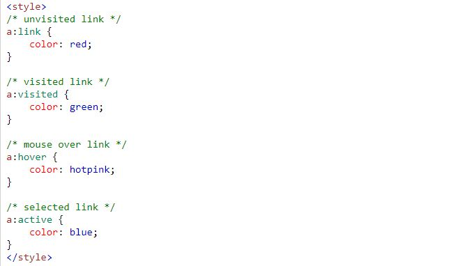
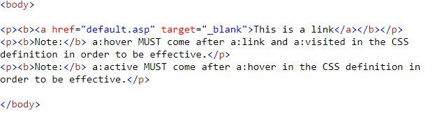
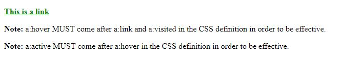
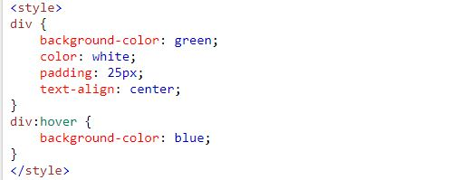
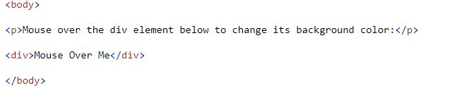
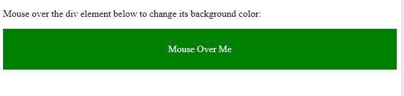
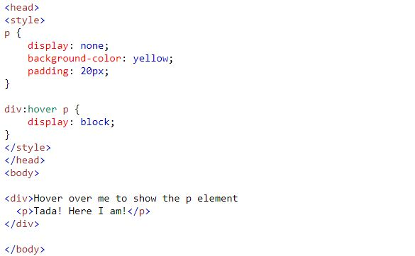
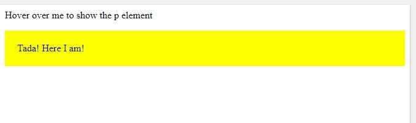

Uma pseudo-classe é usada para definir um estado especial de um elemento
Links podem ser exibidos de diferentes maneiras. Exemplo:
Cabeçalho:
Corpo:
Resultado:
Cabeçalho:
Corpo:
Resultado:
Cabeçalho e corpo:
Resultado:
